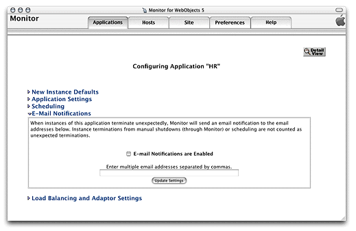

| PATH |

To deploy an application on your site, it must be installed in the appropriate directories on the hosts that run instances of it. For more information, see "Installing Applications".
Setting up an application in your site involves three main steps:
These steps are detailed in "Configuring an Application".
You add applications to your site using Monitor's Applications page, shown in Figure 6-5.
Figure 6-5 Adding an application using Monitor's Applications page
![[image: ../art/applicationadd.gif]](../art/applicationadd.gif)
Follow these steps to add an application:
After you add an application, the application configuration page is displayed. This page has five major sections, which you can show and hide using the disclosure triangles:
Figure 6-6 shows the section of the application configuration page that allows you to set defaults for the application instances you create afterward and for current ones (which are updated after you restart them). For details on each of the properties shown on this page, see "Instance Settings".
Figure 6-6 The New Instance Defaults section of the application configuration page
![[image: ../art/newinstancedefaults.gif]](../art/newinstancedefaults.gif)
Here's an explanation of the buttons you see on the page:
Figure 6-7 shows the Application Settings section of the application configuration page. In it, you define application settings that apply to all the instances of the application. For details of the properties shown in this section, see "Application Settings".
Figure 6-7 The Application Settings section of the application configuration page
![[image: ../art/applicationsettings.gif]](../art/applicationsettings.gif)
Figure 6-8 shows the Scheduling section of the application configuration page. After you add instances of an application, you can schedule them individually here. For details, see "Scheduling Settings".
Figure 6-8 The Scheduling section of the application configuration page
| Note: Before you can configure email notifications, you have to tell Monitor which SMTP server to use. See "Configuring Sites". |
Email Notification Settings shows the Email Notification Settings section of the application configuration page. In it you can enter the email addresses of people that are to be notified when instances of the application terminate unexpectedly.
Figure 6-9 The Email Notifications section of the Application Configuration page
Figure 6-10 shows the Load Balancing and Adaptor Settings section of the application configuration page. This is where you enter values for the HTTP adaptor's configuration properties, including the load-balancing algorithm the adaptor will use to balance user load among the application's instances. These settings override the values entered in the HTTP Adaptor Settings section of the Site page. For information on the properties you can set, see "Load Balancing and Adaptor Settings".
Figure 6-10 The Load Balancing and Adaptor Settings section of the application configuration page
After you have configured an application in Monitor, you can create application instances with ease.
Figure 6-11 The Applications page with one application
![[image: ../art/applications.gif]](../art/applications.gif)
Figure 6-12 The application detail page
The application must be installed on the host you choose; otherwise, an error message is displayed when you try to start the instance. See "Installing Applications" for details.
Figure 6-13 The application detail page after an instance has been added
The Status column indicates whether the instance is on or off. The first time the page is displayed, the newly added instances are off. After a moment (or if you click Refresh Now), and if Auto Recover is enabled for the instance, the page refreshes, showing that the instance is active. (You can change the length of the interval between the automatic updates of the application detail page; see "Setting Monitor Preferences" for details.)
Figure 6-14 shows the application detail page of the HR application, with two instances configured.
Figure 6-14 The application detail page with two instances added
![[image: ../art/detailview.gif]](../art/detailview.gif)
The following list describes the instance configuration information that appears in the application detail page:
http://ebruce2.apple.com/cgi-bin/WebObjects/HR.woa/1
For an explanation of the columns under Statistics, see "The Application Detail Page".
The row with the caption ALL INSTANCES contains buttons that perform some of the functions listed above on all the instances of the application. Clicking Config displays the application configuration page.
After you have added an instance, you can change its configuration in the instance configuration page, shown in Figure 6-15. You can access this page through the instance's Config button in the application detail page. It contains two sections: Instance Settings and Adaptor Settings.
Figure 6-15 Instance configuration page
![[image: ../art/instanceconfigure.gif]](../art/instanceconfigure.gif)
This section is very similar to the New Instance Defaults section of the application configuration page. It has two additional properties: ID and Port, which can only be changed after an instance has been added. For details, see "ID" and "Port".
In this section you can change a subset of the properties available in the Load Balancing and Adaptor Settings section of the application configuration page. For details, see "Load Balancing and Adaptor Settings".
For each instance of your application, there's a statistics
page that displays information such as its running time and memory
usage. See "The Instance Statistics Page" for
more information on this page. If you want to prevent outside agents
from gaining access to the instance statistics page, you can set
a password in the Instance Settings section of the instance configuration
page. Add the following to the Additional Arguments property: -WOStatisticsPassword
password. Figure 6-16 shows an example where
the WOStatisticsPassword argument
has been added to the Additional Arguments field.
Figure 6-16 Setting a password for an instance's statistics page